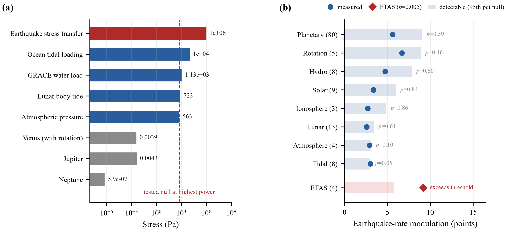
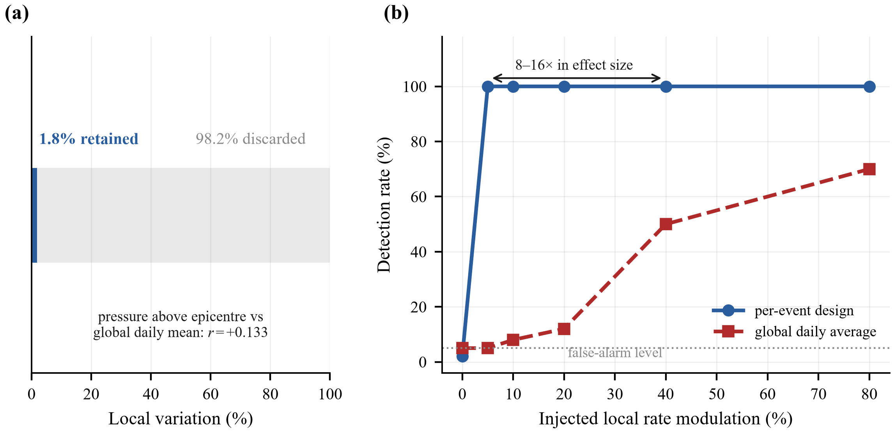
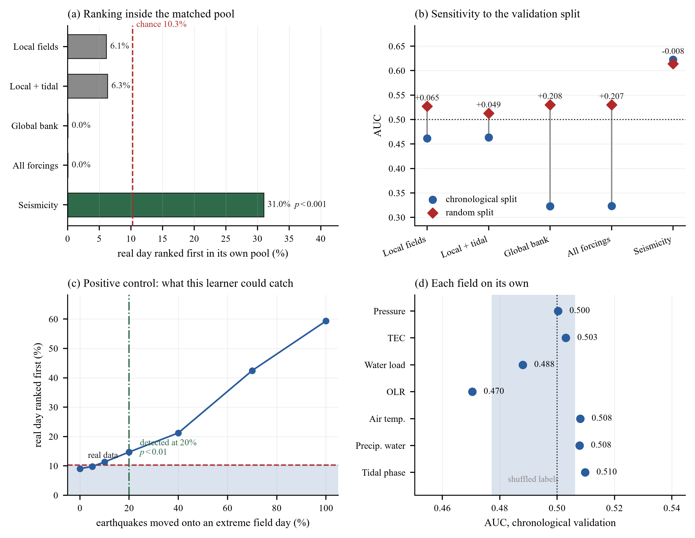
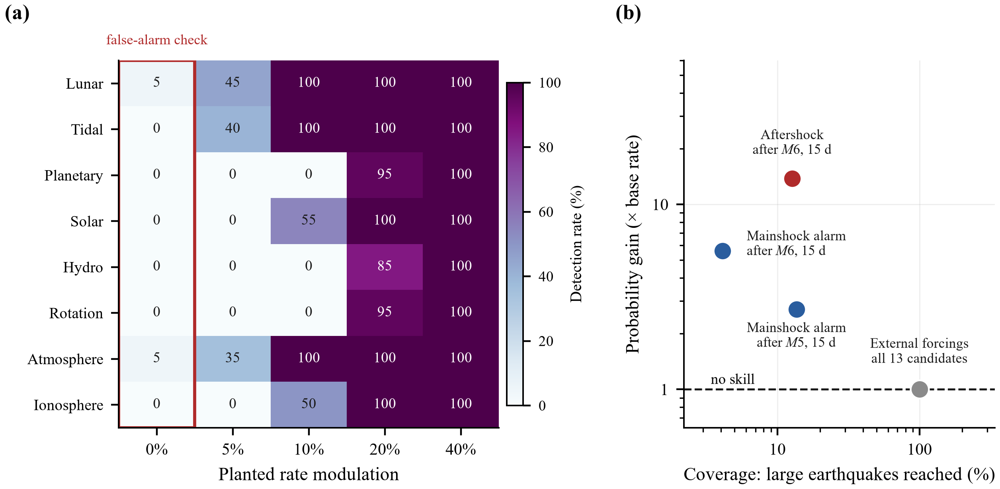

Claims that lunar phase, planetary geometry, solar activity or ionospheric anomalies anticipate earthquakes are tested one at a time, on different catalogues, against uncalibrated nulls. The results cannot be compared, and a null result cannot be told apart from a test too weak to have seen anything. Here the catalogue, the statistic, the null and the multiplicity correction are held fixed, and only the forcing changes.
The deliverable is not a verdict but an upper bound for each hypothesis: a number stating how large an effect would have been detected, so that a null becomes a constraint rather than an absence.
Modulation is the largest deviation of any decile's earthquake rate from the overall rate, so it reads directly as a percentage. Detectable is the 95th percentile of the max-statistic null: the smallest effect that family could have found. Every p is corrected within family for the number of variables searched.
| Candidate | Vars | Measured | Detectable | p | Result |
|---|---|---|---|---|---|
| Lunar phase and geometry | 13 | 2.57% | 3.41% | 0.615 | null |
| Tidal stress, phase | 8 | 3.01% | 2.97% | 0.788 | null |
| Tidal stress, size-frequency | 1 | n/a | n/a | 0.676 | null |
| Planetary geometry | 80 | 5.60% | 9.03% | 0.590 | null |
| Solar activity | 9 | 3.38% | 5.97% | 0.843 | null |
| Hydrological loading | 8 | 4.74% | 7.82% | 0.057 | null |
| Earth rotation | 5 | 6.69% | 8.88% | 0.460 | null |
| Atmospheric loading | 4 | 2.92% | 3.10% | 0.107 | null |
| Ionospheric TEC | 3 | 2.70% | 4.84% | 0.903 | null |
| Outgoing longwave radiation | 3 | n/a | n/a | 0.173 | null |
| Near-surface air temperature | 3 | n/a | n/a | 0.253 | null |
| Precipitable water | 3 | n/a | n/a | 0.890 | null |
| Soil-gas radon | 0 | n/a | n/a | n/a | no data |
| Recent seismicity (ETAS reference) | 4 | 9.19% | 5.80% | 0.005 | detected |
Tidal phase measures 3.01% against a 2.97% threshold and returns p = 0.048 when evaluated at a single reference site. Recomputed on each earthquake's own fault plane from its moment tensor it returns p = 0.788, which is the value shown. Raising the resolution destroyed the apparent signal rather than creating one. Radon is a gap in the available data rather than a result: no global archive of soil-gas monitoring exists.

Four of the candidates are spatial fields: atmospheric pressure, hydrological load, ionospheric electron content, and tidal stress. Standard practice, and our own first approach, reduces such a field to one number per day. The anomaly above an epicentre correlates with that daily global mean at r = 0.13, so the global variable carries under 2% of the local variation.
An injection experiment turns that into detection power. A triggering effect of known size is written into the real pressure field, earthquake times are redrawn to follow it, and both designs are asked to recover it under the same null. The per-event design finds a 5% local modulation every time; the global design needs 40 to 80%.

Learned against controls matched on grid cell and season, no block of forcings ranks an earthquake's real day above the ten candidate days it was matched against more often than chance. Recent seismicity, in the same folds with the same model, reaches three times chance.
| Feature block | Real day ranked first | p | AUC | Change from the split alone |
|---|---|---|---|---|
| Local fields | 6.1% | 0.996 | 0.4616 | +0.065 |
| Local fields plus tidal | 6.3% | 0.991 | 0.4633 | +0.049 |
| Global daily bank | 0.0% | 1.000 | 0.3228 | +0.208 |
| All forcings | 0.0% | 1.000 | 0.3234 | +0.207 |
| Recent seismicity | 31.0% | <0.001 | 0.6222 | −0.008 |
The last column is the useful one. On identical rows and an identical model, the seismicity reference moves by 0.008 AUC between chronological and random validation; the forcing bank moves by 0.208. Ridge regression recovers a day's date from the forcing bank at R² = 0.99, which is the mechanism: under a random split the model locates a test day in time and recalls the local rate. What it learns is the calendar.

A framework that can never say yes says nothing when it says no. Planted modulations of 10 to 20% are recovered in all eight families at a false-alarm rate of 0 to 5%. In the machine learning design, an injected 20% is recovered at p = 0.001 and 10% is not, so that design rules out any effect re-timing more than about a fifth of earthquakes onto extreme field days. It is looser than the resampling bound of 5%, which is why the learner is reported as a cross-check rather than as the sharper test.

Four of them were ours. They are recorded because a framework that has never rejected its own candidate has not shown that it can.
| Apparent | After | Cause |
|---|---|---|
| 0.0515 | 0.808 | quartile V-test, failed quintile scaling |
| <0.0001 | 0.417–0.966 | planetary Schuster test against an uncalibrated null |
| <0.0001 | 0.36 | GRACE, co-seismic gravity inside the window |
| 0.010 | 0.347 | GRACE, monthly average overlapping the event |
| 0.025 | 0.565 | atmospheric level, failed split-half |
| 0.048 | 0.788 | tidal phase at one site against each event's own fault plane |
These bounds constrain a global moment-tensor catalogue at moment magnitude 5 to 6 over decades, at temporal scales of days to weeks. They do not address multi-year or decadal modulation, which a trend-preserving null cannot see. They do not address effects confined to particular fault mechanisms or regions, which a globally pooled test dilutes. And they do not exclude effects below the resolution of a global catalogue: a dense local network reaching magnitude 2 to 3 measures b-values far better than is possible here, and GNSS crustal strain, which measures the quantity that actually loads a fault, was not available.
The method behind these numbers is packaged as a browser-based audit tool, so the same battery can be run against any candidate predictor rather than only the thirteen here.